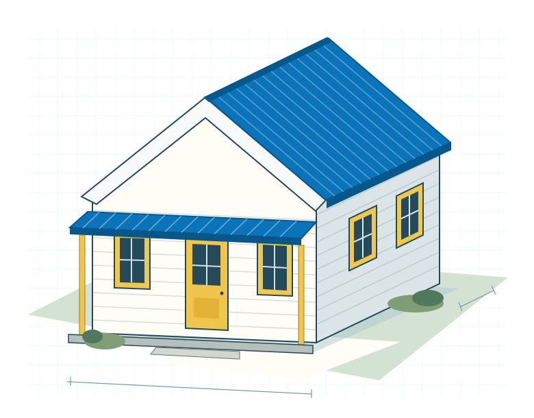
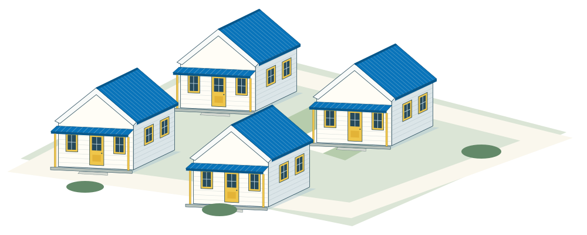
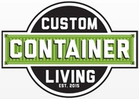
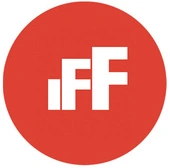
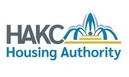
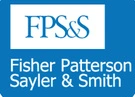
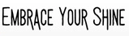

01
Underutilized
land.
Vacant land, surplus property, and institutional holdings can become places to live.
A place to beginMission-driven housing · Midwest roots
Attainable homes. Underutilized land.
Community at the center.
We help mission-driven partners turn the resources they already have into attainable housing—with coordinated planning, off-site construction, and a model designed to grow.
From possibility to a place to liveBig possibility. Small footprint.
A place to live.
Room to thrive.

Explore the visionEmbrace Life Cottage CampusIllustrative housing concept · Not final architecture
01 / Connecting the pieces
The need for attainable homes sits alongside resources that can be used differently. The challenge is bringing them together.
Vacant land, surplus property, and institutional holdings can become places to live.
A place to beginFunding partners need a coordinated path from a housing goal to a buildable project.
Resources with purposeLocal organizations bring the relationships, expertise, and services that connect housing to community needs.
People at the center02 / Our vision
A stable place to live creates room for what comes next.
Our mission is to solve hidden homelessness by creating affordable and efficient housing solutions. We turn underutilized assets into attainable homes, with community at the center of the vision.
The story behind MicroLiving03 / Our approach
MicroLiving coordinates planning, construction partners, and project oversight around the same housing goal.
From strategic vision to a workable plan.
Connect underutilized land, housing configurations, community needs, and project requirements before construction begins.
Execution with a coordinated team.
Bring construction partners together around a defined scope, schedule, and shared quality expectations.
Oversight that connects the pieces.
Coordinate delivery, track progress, and use quality checkpoints to keep the work aligned with the project plan.
04 / A scalable model
A development approach designed to grow—from a single infill lot to a wider community program.

Illustrative cluster · Not an approved site plan or unit count
One site. A practical starting point.
Put an individual infill lot or underutilized parcel to work. Start with a home and a delivery approach that can inform what comes next.
Small homes. Shared possibility.
Bring a group of compact homes together with shared space. Coordinate the site, construction, and community partnerships as one project.
A model that can travel.
Apply a repeatable approach across a larger campus, a neighborhood, or multiple sites, adapting each project to its partners and community.
05 / Projects
Two project concepts show how underutilized assets can connect to a broader housing vision.
Kansas City · Historic Northeast
4611 E. 10th St., Kansas City
A proposed cottage community in the Lykins neighborhood, bringing compact homes together with shared spaces to work, grow, and connect.
Also in the pipeline · Harris Park
The project materials describe a proposed collaboration with The Way Home to develop five affordable homes in Harris Park.
The agreement was being finalized in the supplied overview. Current scope, agreement status, and schedule require confirmation.
Talk with us about projectsProject descriptions reflect supplied planning materials, not live construction updates or current housing availability. All architectural illustrations are conceptual.
06 / What makes us different · Why us, why now
Instead of asking partners to connect every piece themselves, MicroLiving brings development, construction coordination, financing alignment, and community partnerships into one approach.
A delivery approach designed to make construction more efficient through coordinated off-site production.
Standardized home designs provide a starting point that can be used across projects.
Verification comes before the next payment decision, not after the problem has moved downstream.
Connect scope, milestones, and funding decisions before committing to the next phase.
Keep partners connected as decisions, site conditions, and project needs evolve.
Use a consistent delivery framework while adapting to the needs of each community.
The goal: a clearer path from existing assets to attainable homes.
Explore the quality gates07 / Community partnerships
Housing delivery works through people and organizations bringing construction, design, finance, and community expertise together.
Organizations featured in the supplied project materials





Start a conversation
Bring a site, a housing goal, or a partnership idea. Tell us what you’re working toward.
Landowners. Institutional partners.
Builders. Community organizations.
Capital and sponsorship partners.